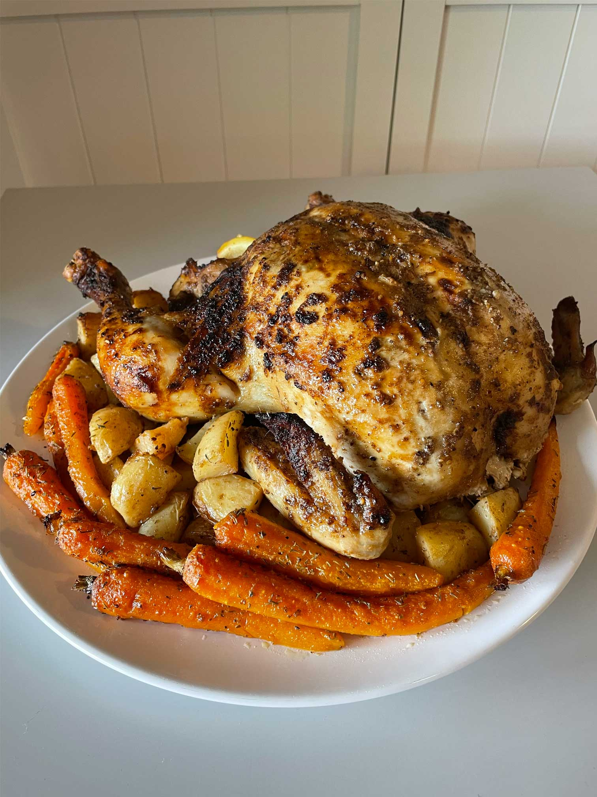

Bush Spiced Roast Chicken
With a side of Roast Vegetables

Ingredients:
For the chicken:
- Whole chicken
- Herbie’s bbq bush spice mix 30g
- 3Tbs minced garlic
- 4Tbs olive oil
- 2Tbs butter (melted)
- 2tsp salt
- 1 lemon, cut into quarters
- 1/2 a lemon, juiced
- 2 garlic cloves
For the vegetables:
- Dried thyme
- 1x lemon, juiced
- 3 large potatoes
- Bunch of baby carrots
Method:
- Preheat oven to 200°C.
- De-gut chicken, if need be, and place in
a baking tray.
- To make the spice mix, combine melt-
ed butter, olive oil, salt, lemon juice,
garlic and Herbie’s spice mix into a
bowl.
- Poke small holes into the chicken and
rub the spice mix all over it -
making sure to also get underneath the skin.
- Stuff chicken with garlic and a sliced
lemon to keep moist.
- Sprinkle a pinch of salt on the chicken
and cover tray with alfoil.
- Place covered chicken into the oven
for 70 minutes.
- For roast vegetables, cut potatoes into
quarters and peel carrots - placing them
in a tray.
- Drizzle them in olive oil and lemon
juice, and sprinkle with salt and thyme.
- Cover the veggies and roast in the
oven for 60 minutes.
- Uncover the chicken and veggies to
brown for about 20 minutes.
- To check if chicken is cooked, insert a
thermometer to make sure it reads over
75°C.
- Chicken and veggies are now ready to
serve!